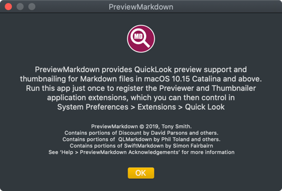
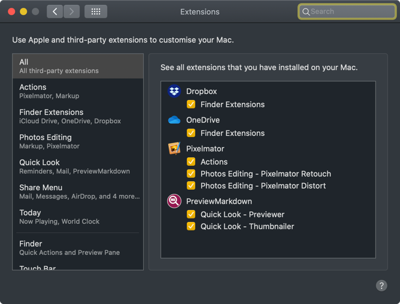

PreviewMarkdown
A tool to generate Markdown file QuickLook previews for macOS Catalina
Latest Release: 1.0.5
PreviewMarkdown is now available on the App Store
How to Use PreviewMarkdown
Install the app and run it. This will register the availability of the app’s QuickLook extensions, Previewer and Thumbnailer. You can now quit the app: just click OK:

You can disable or re-enable Previewer and Thumbnailer in System Preferences > Extensions:

For some background information on how Catalina delivers QuickLook previews, please see this blog post.
Troubleshooting
If it appears that either Previewer or Thumbnailer are not working after you have run the host app, please log out of your Mac and then log back in. A future release will offer to do this for you.
Enjoyed Using PreviewMarkdown?
If you have found PreviewMarkdown to be useful, please consider writing a positive review on the Mac App Store, or simply give it a rating.
Thank you!
Acknowledgements
In addition to its own code, PreviewMarkdown makes use of code from the following sources:
- Discount — Markdown-to-HTML conversion.
- QLMarkdown — Swift bridging to Discount.
- SwiftyMarkdown — Markdown-to-NSAttributedString conversion.
Release Notes
- 1.0.5 9 April 2020
- Mac App Store version.
- 1.0.4 Not Released
- 1.0.3 10 December 2019
- Add the version number to the app info dialog.
- 1.0.2 4 December 2019
- Fix random crash (
string index out of rangein SwiftyMarkdown).
- Fix random crash (
- 1.0.1 20 November 2019
- Correct thumbnail styling.
- 1.0.0 8 November 2019
- Initial public release.
Source Code
You can view PreviewMarkdown’s source code at GitHub.
Related Software


Site and software copyright © 2020, Tony Smith
Site Last Updated: 20 July 2020